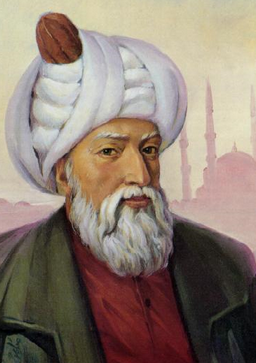

Mimar Sinan (1490-1588)

Ýslam aleminin ve dünyanýn en büyük mimarlarýndandýr. Mimari dehasýndan ve meydana getirdiði birbirinden güzel eserlerinden dolayý "Koca Sinan" lakabýyla anýlmaktadýr. Birbirinden güzel 364 esere imza attýðý gibi, baþta Ayasofya Camii olmak üzere, bir çok eseri restore ederek günümüze kadar gelmesine katkýda bulunmuþtur. Ýmparatorluðun bir çok yerinde inþa ettirdiði eserleri yükselme döneminin ihtiþamýný gösteren en önemli eserlerdir. Ömrünün sonuna kadar mimari faaliyetlerini sürdürmüþ, Selimiye Camii gibi bir þaheseri 80'li yaþlarýndayken yapmýþtýr. Risâle-i Nur'da Mimar Sinan ismi, yaratýlýþtaki harika sanat ve maharete baðlamýnda zikredilirken; mevcudatýn yaratýlýþý Cenab-ý Hakk'a verilmeyip kendi kendilerine verildiði zaman, her bir taþýn, zerrenin Mimar Sinan kadar bir maharete malik olmalarý gerektiðine iþaret edilmektedir. (Sözler, s. 510)Sinan, 1490 tarihinde Kayseri'ye baðlý Aðýrnas Köyünde doðdu. Yavuz Sultan Selim zamanýnda Ýstanbul'a geldi. Acemi Oðlanlar kýþlasýnda iyi bir eðitimden geçti. Burada verilen eðitim, temel askeri eðitimden ibaret olmayýp, bunun yanýnda inþaatlarda ve gemilerde çalýþtýrýlma yoluyla yetenekleri doðrultusunda, deðiþik meslekler edinmeleri de saðlanmaktaydý. Böylece bu ocaða gelenler, askeri sýfatlarýnýn yanýnda bir de meslek öðrenirlerdi. Sinan da burada marangozluk (neccarlýk) mesleðini öðrendi. Sinan'ýn buradaki eðitimi dokuz yýl sürdü. Bu arada ordu ile birlikte Ýran ve Mýsýr'a gitti.
Sinan, Kanuni'nin 1521 Belgrad seferine Yeniçeri olarak katýldý. Bir yýl sonra Rodos seferi ve 1526 yýlýnda da Mohaç Meydan Savaþýna katýldý. Katýldýðý sefer ve savaþlarda gösterdiði baþarýlardan ötürü taltif ve terfilerle çeþitli dereceler aldý. Ustalýk ve maharetini ilk olarak 1533 yýlýnda gerçekleþtirilen Ýran Seferi sýrasýnda gösterdi. Van gölü sahiline gelindikten sonra ihtiyaç duyulan üç kadýrgayý iki hafta gibi kýsa bir sürede yapýp donatmasý sadrazamý son derece memnun etti. Gemilerin idaresi de kendisine verildi. Sefer dönüþünde Yeniçeri Ocaðýnda önemli bir makam olan Hasekilik rütbesinin kendisine verilmesi itibarýný önemli ölçüde arttýrdý. Bu rütbesiyle birkaç sefere katýldý.
Sinan, 1538 yýlýnda Kara Buðdan seferine katýldý. Prut Nehri'ni geçmek için köprü yapýlmasý iþi, zeminin kayganlýðýndan ötürü bir türlü baþarýlamýyordu. Bu görevin Sinan'a verilmesinden sonra, orduda bulunan bütün mimar ve marangozlarý topladý. On üç gün gibi kýsa bir süre içinde köprü yapýldý ve ordunun karþýya geçmesi saðlandý. Onu bilen ve maharetlerine tanýk olan Lütfi Paþanýn teklifiyle 1538 yýlýnda, 35 yýl boyunca büyük bir baþarýyla sürdüreceði, Hassa Baþmimarlýðýna getirildi. Bu göreve getirilmeden önce, ordu içindeki yetiþme çaðýnda Ýran, Suriye, Irak ve Mýsýr'ý gezip gördüðü gibi, tüm Balkanlarý, Macaristan'ý ve Viyana'ya kadar olan bölgeleri yakýndan görüp tanýma fýrsatýný elde etti. Bu dolaþma ve seyahatler, muhtelif yerlerde mimarlýk kabiliyetini vücuda getirdiði eserleriyle ortaya koymasýnda olumlu etki yaptý. Baþmimarlýða getirildiðinde yaþý elliye yaklaþmýþtý.
Mimarbaþýlýða getirildikten sonra, Macaristan'daki Budin'den ve Kýrým'ýn Gözleve'sinden Mekke'ye kadar, Ýmparatorluðun muhtelif beldelerinde, þaþýlacak bir sürat ve maharetle sayýsýz eserlere imza attý. Ýlk önemli ve -kendi tabiri ile- çýraklýk dönemi eseri, Þehzadebaþý Camii ve külliyesidir. Süleymaniye ve Selimiye ile oluþturulan bu üç büyük eseri, ayný zamanda sanatýnýn geliþim dönemlerine de tanýklýk etmektedir. Ýstanbul'daki en muhteþem eseri olan Süleymaniye Camii kalfalýk döneminin eseri olarak addedilirken, en muhteþem eseri olan ve Edirne'de bulunan Selimiye Camii de ustalýk eseri olarak kabul görmektedir. Bu derecelendirme ayný zamanda kendi ifadelerine dayanmaktadýr.
Þehzadebaþý Camiine 54 yaþýnda baþlayan Mimar Sinan, bu eseri dört yýlda tamamladý. Mimarbaþý olarak vücuda getirdiði bu eserinden sonra, çok sayýdaki diðer eserleri de arka arkaya gelmeye baþladý. Altý ve sekiz köþeli þemalar üzerine oturttuðu kubbelerle orta büyüklükte olan camileri Ýstanbul'un dört bir yanýnda inþa etti. Bu imar faaliyetiyle söz konusu semtlerde önemli ölçüde bir canlanma meydana geldi. Selçuklu mimarisiyle beraber, batýdan doðuya birçok yeri görüp eserleri tanýma imkanýna sahip olmasýna raðmen körü körüne taklitçiliðe gitmedi. Eserlerine kendine özgü süsleme ve motifleri nakþetti. Gösterdiði maharetiyle devletin en parlak dönemine yakýþýr sanat þaheserleri meydana getirdi. Üzerinden asýrlar geçmesine raðmen eserleri hâlâ dimdik ayaktadýr ve görenlerin büyük hayranlýðýný celbetmektedir.
Yaptýðý sayýsýz eserleriyle ulaþýlmasý çok zor bir dereceye yükselen Mimar Sinan, 84 cami, 52 mescit, 57 medrese, 22 türbe, 17 imaret, 3 darüþþifa, 8 köprü, 20 kervansaray, 36 saray, 8 mahzen, 48 hamam inþa ettirdi. Bu eserleriyle, imparatorluðun zirve döneminde kendisine düþeni en güzel þekilde yerine getirdi. Seksen yaþýnda yaptýðý muhteþem Selimiye Camii, bir çok yeniliði ve inceliði de göstermektedir. 31,5 m. çapýndaki büyük kubbesi, sekizgen biçimindeki gövdesi ve etrafýný saran zarif minareleriyle çok uzaklardan kendini belli eden bu eser ayný zamanda sanatkârýný, dünyanýn gelmiþ geçmiþ en büyük mimarlarý arasýnda gösteren mümtaz bir eser hüviyetine büründü.
Mimar Sinan, sadece yeni eserler meydana getirmekle kalmadý. Mimarbaþýlýðý döneminde muhtelif konulara el attý. Ayasofya Camiinin restorasyonu için de büyük emek sarf etti. 1573 yýlýnda kubbesini onardýðý gibi, yaptýðý takviye duvarlarla eserin günümüze kadar gelmesinde büyük emeði geçmiþ oldu. Diðer taraftan þaheserlerin etrafýnda veya yakýnýnda inþa edilerek görüntünün bozulmasýna sebep olan yapýþlaþmayý engellemek ve olanlarý yýkmakla da uðraþtý. Diðer taraftan Ýstanbul'un dar cadde ve sokaklarýnýn geniþletilmesi için de çaba harcadý. Dar sokaklarýn, yangýnlara müdahaleyi güçleþtirdiðini ve bu durumun sebep olacaðý büyük tehlikelere karþý bir fermanýn yayýnlanmasýný saðladý. Kaldýrýmlarla ilgilendiði gibi bunlara harcanmak üzere vakfiyesinden de para ayýrdý.
Ömrünün son demlerine kadar çalýþan, ulaþýlmasý zor eserler silsilesi vücuda getiren, seksen yaþýnda Selimiye Camii gibi bir þaheseri inþa eden Mimar Sinan, 1588 yýlýnda Hakk'ýn rahmetine kavuþtu. Süleymaniye Camiinin yanýnda buluna türbeye defnedildi. Görkemli türbelerin inþasýna imza atmasýna raðmen, kendisi için son derece mütevazi ve sade bir türbe yapmýþtý. Mezarlýkta fark edilmeyen Koca Sinan, her bir eseriyle dimdik ayakta durmaya devam etmektedir.